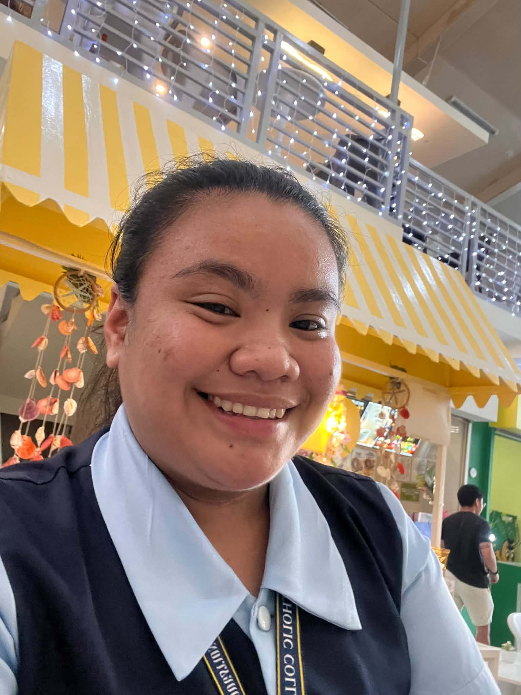

HTML
Structuring clear, meaningful content for web pages.
CURRENTLY LEARNINGBSIT STUDENT AT KCC
Hi, I’m Shayne Nicole Obero—an Information Technology student exploring the world of web development, one project at a time.

01 / ABOUT ME
I’m currently pursuing a Bachelor of Science in Information Technology at Kabankalan Catholic College.
I’m building my foundation in technology and learning how ideas become web experiences. This portfolio is part of my learning journey—a place to share who I am, what I’m practicing, and the projects I create along the way.
02 / WHAT I’M LEARNING
These are skills I’m developing as I continue my studies. I’ll keep adding to this list as I gain experience.
Structuring clear, meaningful content for web pages.
CURRENTLY LEARNINGStyling pages with thoughtful layouts, colors, and spacing.
CURRENTLY LEARNINGA quality I value in group work and playing volleyball.
PERSONAL STRENGTH03 / SELECTED WORK
Every project is a chance to learn something new. Here’s the first one I’m building.
PERSONAL WEBSITE · 2026
A simple space to introduce myself, share what I’m learning, and document my journey as a BSIT student.
IN PROGRESSA LITTLE BEYOND THE SCREEN
When I’m away from my studies, I enjoy playing volleyball. It’s a fun way to stay active and enjoy the energy of a team.
04 / SAY HELLO
This portfolio is a work in progress. I’m excited to keep learning and add more projects as I grow.
Back to top